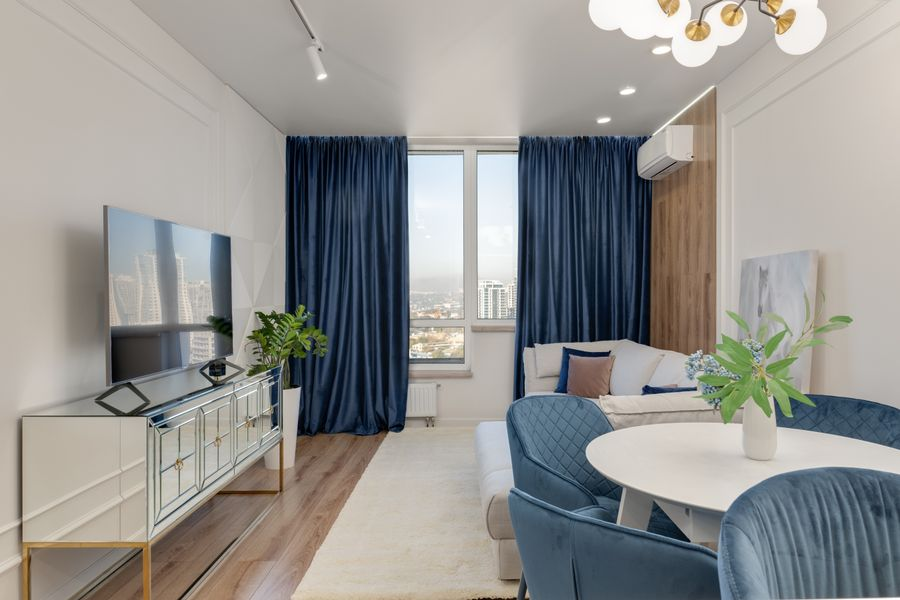
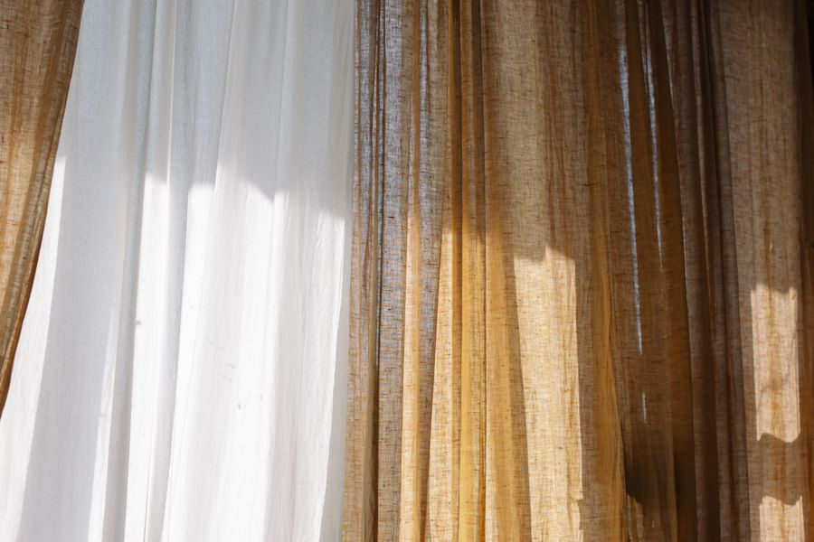
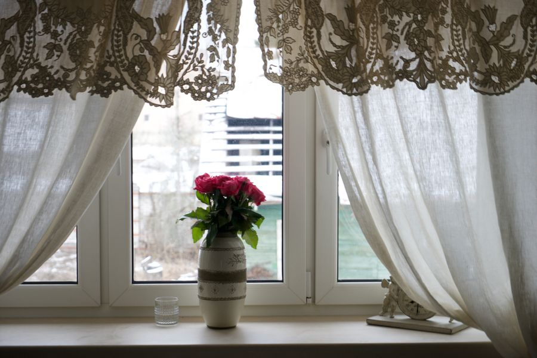
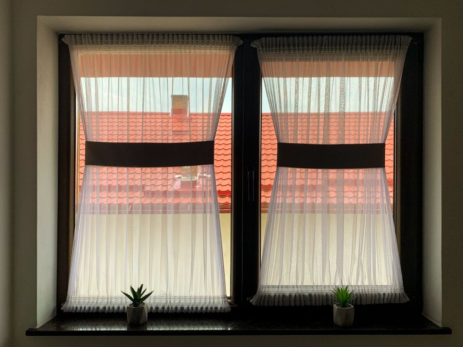
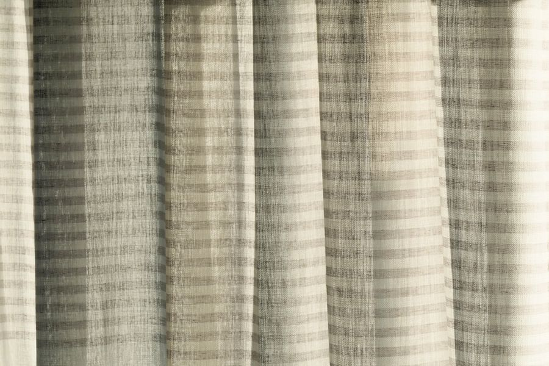
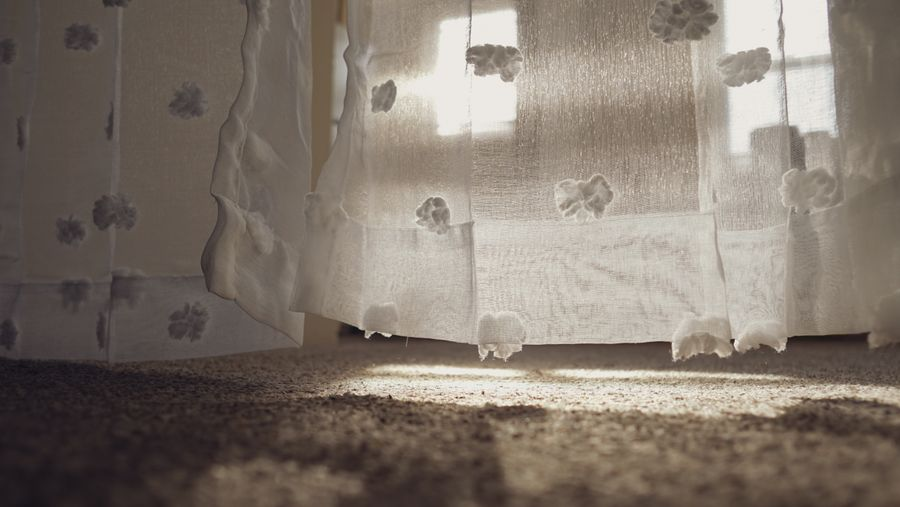
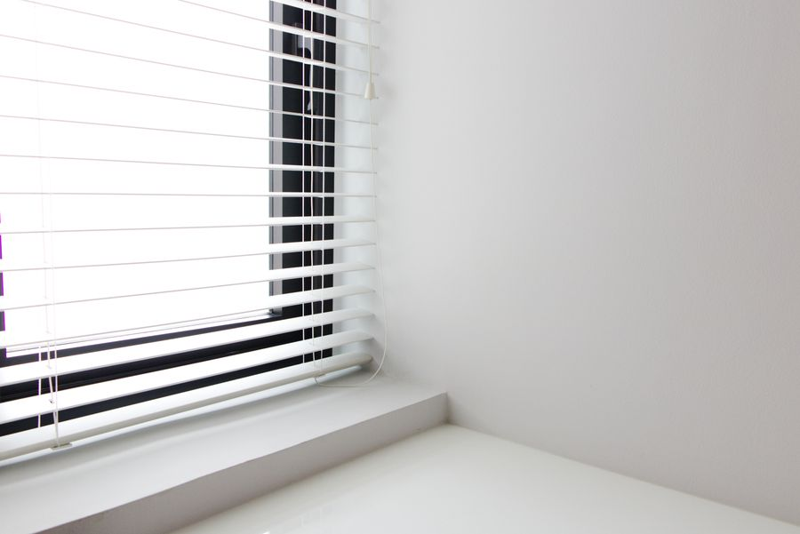
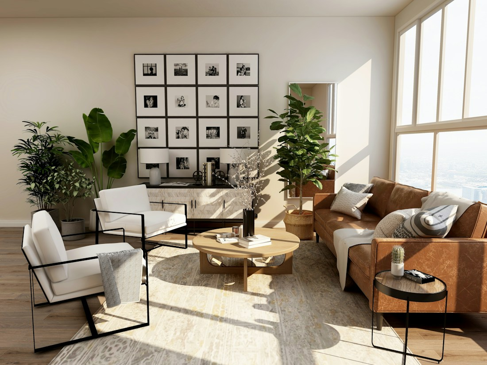

Velvet Drapes
Dense, plush pile falls in rich folds and adds warmth to bedrooms and lounges.
View details →Thoughtful window dressing
Made to Measure. Made for You. Custom curtains, considered fabrics and a fitting service made simple.
Find your feeling

Dense, plush pile falls in rich folds and adds warmth to bedrooms and lounges.
View details →
Breathable woven linen brings a relaxed, natural texture to bright living spaces.
View details →
A gentle sheen and fluid drape lend a refined, polished finish to formal rooms.
View details →
Short panels cover the lower half of the window for privacy without losing daylight.
View details →

Botanical prints bring colour and character to kitchens, bedrooms and bay windows.
View details →
Adjustable slats give precise control over light, glare and privacy through the day.
View details →We bring fabric samples to your home, where colors and textures make sense.
Professional measuring helps every panel fall just as it should.
A considered finish, custom made for your windows and routine.

Carefully considered, never complicated
We help you weigh the practical details—privacy, light, texture and care—then make a clear plan around what feels right to you.
Recently dressed
Colour, considered
Choose a mood and see the shades, fabrics and light it works with best.
Warm whites and oatmeals keep light bouncing, so smaller rooms feel open and calm.
Works with: linen, cotton slub, light voile
Kind words
They brought the samples to our flat, helped us narrow six options down to two, and the panels arrived on the day they promised.
The blackout lining changed our evenings. Fitting was tidy, careful and finished inside the hour for four windows.
I wanted something that would not shout. The linen we chose filters the afternoon light beautifully and still feels like our home.
Made to Measure. Made for You.